РАЗГРУЗКА 5, ВЕСЕННЯЯ
Girl power
Я уже говорил за женскую иллюстрацию, вкратце, есть женская иллюстрация и есть женская иллюстрация. Первую глупо выделять в отдельную историю потому, что она ничем не хуже мужской, просто пахнет иначе. Вторая ведет родословную от девчачьей иллюстрации, от принцесс в дневниках. В этом не было бы ничего плохого, если бы это было кому-нибудь, кроме автора (и ее друзей), зачем-нибудь нужно, и главное, если бы этого не было так много, а всего остального — так мало. То есть, ну, две трети материала, который поступает на модерацию в сообщество ру_иллюстраторз — это печальные одинокие девочки, оплетенные «внутренним миром художника». Доходит до страшного: «бегут, бегут по стенке белесые глаза».
Нет, даже там случаются симпатичные вещи,
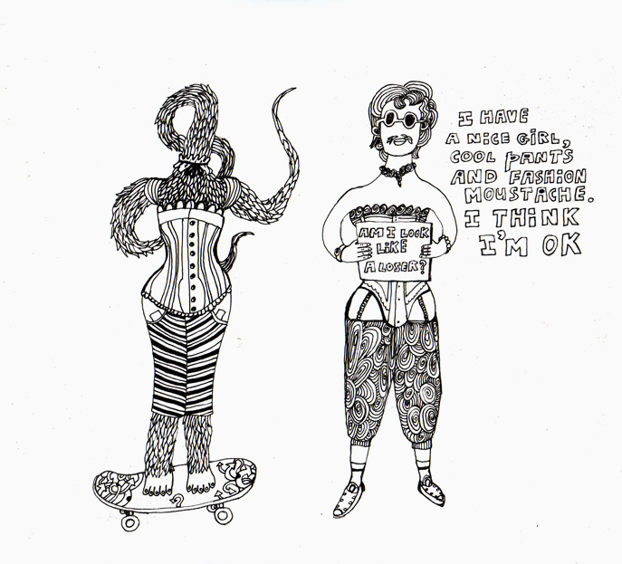
но это, кажется, мальчик.
В общем, запоздало, но все-таки. По случаю прошедшего 8го Марта и вообще как бы весны — букет ссылок на отличных зарубежных иллюстраторов женского пола. Далее без комментариев — просто влюбляйтесь, если умеете.
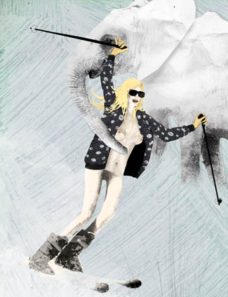
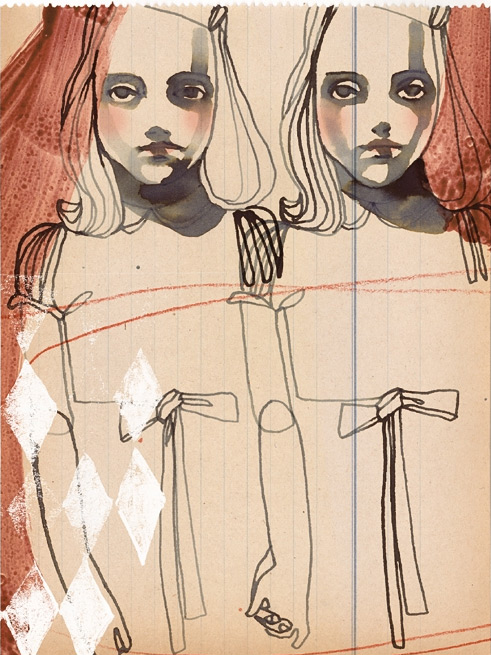
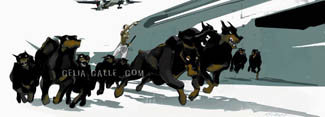
Laurie Proud, обалденная.
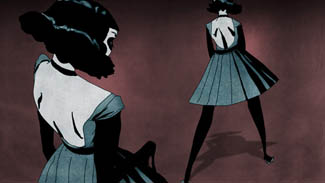
Или вот, а?
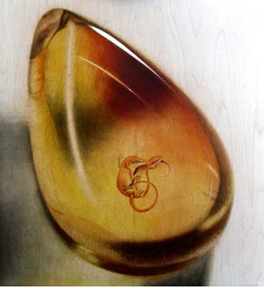
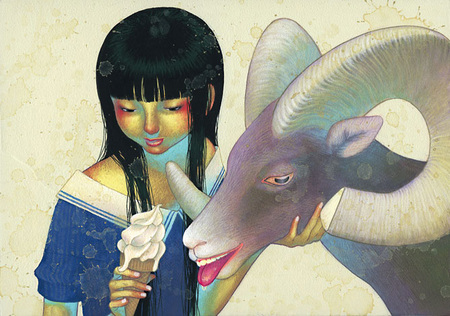
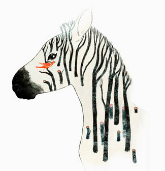
Meg Hunt уже была здесь, но все равно отличная.
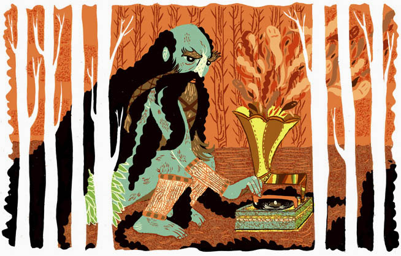
Да, коллеги, поправьте ссылки на Кози Чен, она теперь на фликре.
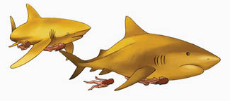
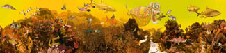
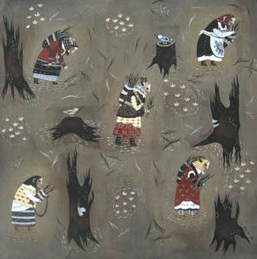
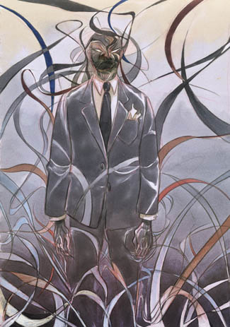
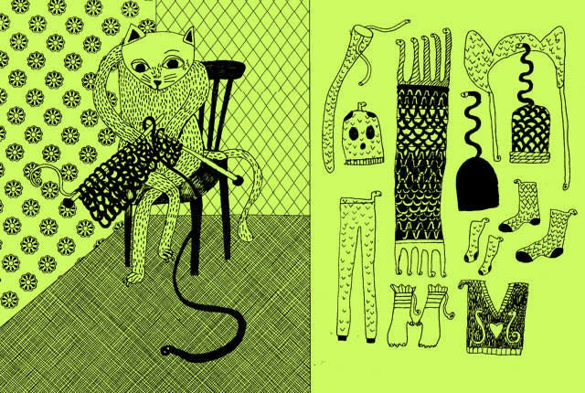
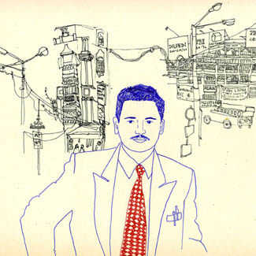
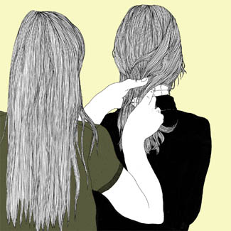
И напоследок один местный автор, Наталья Вихляева.
Наталья Вихляева
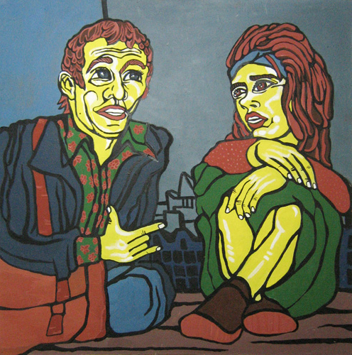
В интернете, боюсь, почти ничего не найти, зато 8-го апреля у Натальи открывается в ДОМе выставка, приходите.